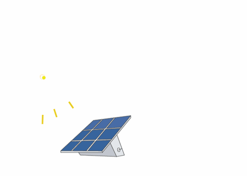

By Aarav Sharma

- Solar Power
Back to Top
- Solar power uses solar panels to convert the sun's unlimited sunlight to electricity, which can be used to
power homes and appliances.
- Solar energy is infinite and won't get used up, unlike non-renewable resources like coal and oil.
- Solar energy dosen't give off Carbon Dioxide (Co2) like coal gives when burned.
- Solar Panels need a lot of space on the roof
- Solar Panels are not very costly, but they aren't very cheap either. An investment would be required.
- In absence of abundant sunlight, the solar panel won't give electricity
- Wind Energy
Back to Top
- In wind energy, the wind turn a turbine, which then turns the movement to electricity.
- Wind energy will use the movement of wind and converts it to electricity. Wind also won't get used up.
- Once a windmill is made, it lasts for a long time, and you won't need to keep an eye on it all the time.
- Windmills might disturb the avian wildlife.
- Windmills will need quite a bit of space for them to be set up and to get good wind, so it can convert it to
electricity.
- Hydropower
Back to Top
- Water is used to turn the turbine. This creates electricity.
- The water is recycled and it is an example of water harvesting.
- Using hydropower, we would be one step closer to a renewable life.
- Can be used only where the water is in abundance.
- Constant water flow is needed.